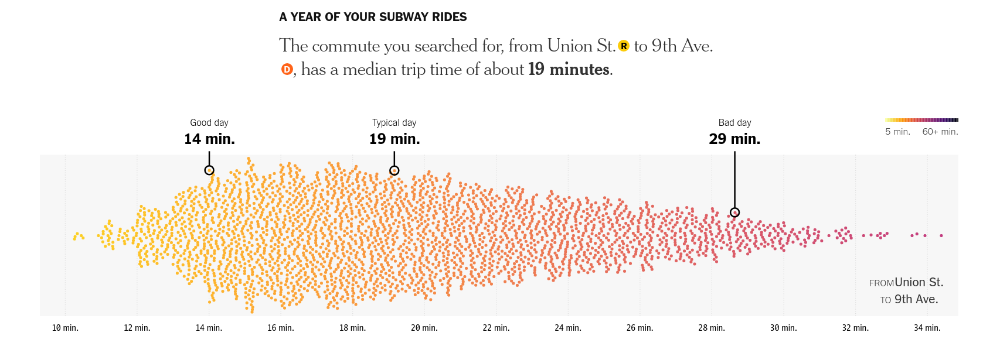

Visualizations
After receiving feedback from Yuan, we decided to alter our intended visualizations of student commute times. Our original intent was for a user to specify home and school addresses, and display a predetermined commute, with additional information and statistics regarding commutes. Instead, we will be emulating the visualization in this New York Times article regarding work commute time variability. We decided visualizing aggregate data would better communicate the number of students on a particular commute, as well as the overall commuting conditions they endure.
